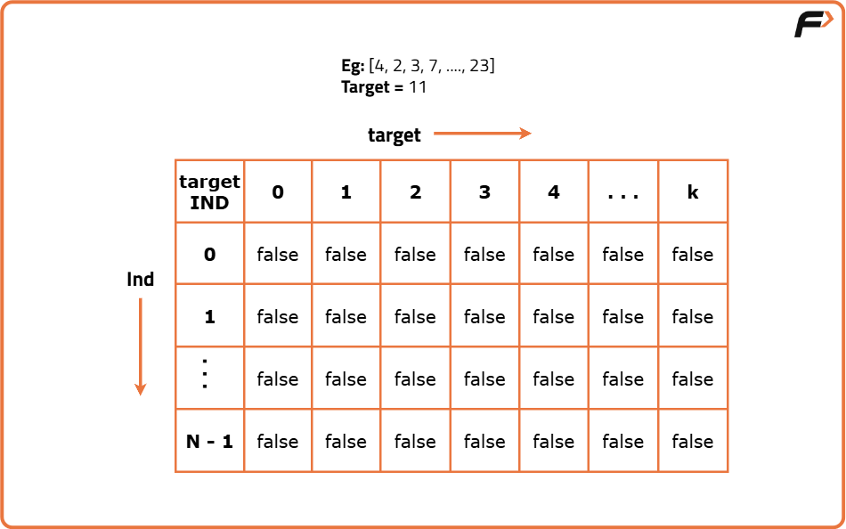
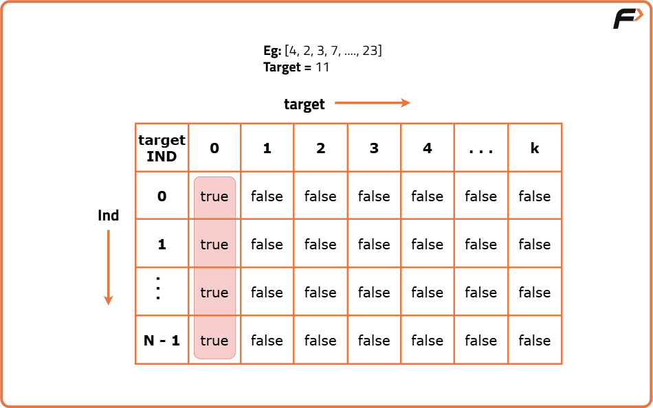
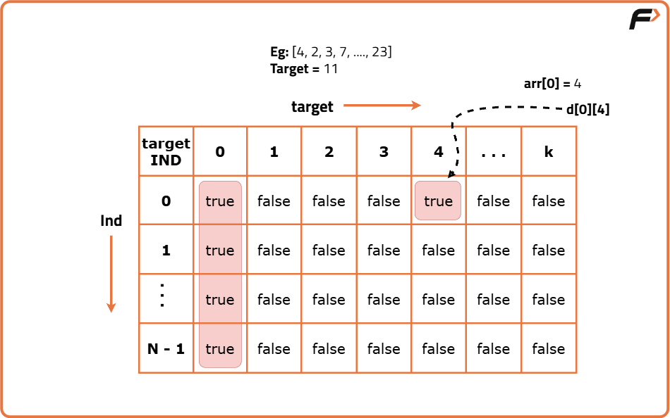

Subset sum equal to target (DP- 14)
Problem Statement: We are given an array ‘ARR’ with N positive integers. We need to find if there is a subset in “ARR” with a sum equal to K. If there is, return true else return false.
A subset/subsequence is a contiguous or non-contiguous part of an array, where elements appear in the same order as the original array.
For example, for the array: [2,3,1] , the subsequences will be [{2},{3},{1},{2,3},{2,1},{3,1},{2,3,1}} but {3,2} is not a subsequence because its elements are not in the same order as the original array.
Examples
Input : N = 4, ARR = [4, 3, 5, 2], K = 6 Output : true Explanation : One possible subset with sum = 6 is [4, 2]. There’s also [3, 3] but that doesn’t exist in the array. As soon as we find one subset whose sum is equal to K, the answer is true.
Input : N = 3, ARR = [1, 2, 5], K = 4 Output : false Explanation : Possible subsets and their sums: [1] → 1, [2] → 2, [5] → 5, [1,2] → 3, [1,5] → 6, [2,5] → 7, [1,2,5] → 8. None of them equal 4, so the answer is false.
Disclaimer: Don’t jump directly to the solution, try it out yourself first.
Memorization Approach
Algorithm
Why a Greedy Solution doesn’t work?
A Greedy Solution doesn’t make sense because we are not looking to optimize anything. We can rather try to generate all subsequences using recursion and whenever we get a single subsequence whose sum is equal to the given target, we can return true.Note: Readers are highly advised to watch this video “Recursion on Subsequences” to understand how we generate subsequences using recursion.
Steps to form the recursive solution:
We will first form the recursive solution by the three points mentioned in the Dynamic Programming Introduction.Express the problem in terms of indexes.
The array will have an index but there is one more parameter “target”. We are given the initial problem to find whether there exists in the whole array a subsequence whose sum is equal to the target. So, we can say that initially, we need to find(n-1, target) which means that we need to find whether there exists a subsequence in the array from index 0 to n-1, whose sum is equal to the target. Similarly, we can generalize it for an index.
Base Cases:
- If target == 0, it means that we have already found the subsequence from the previous steps, so we can return true.
- If ind==0, it means we are at the first element, so we need to return arr[ind]==target. If the element is equal to the target we return true else false.
Try out all possible choices at a given index.
We need to generate all the subsequences. We will use the pick/non-pick technique as discussed in this video “Recursion on Subsequences”.
We have two choices:
- Exclude the current element in the subsequence: We first try to find a subsequence without considering the current index element. For this, we will make a recursive call to f(ind-1,target).
- Include the current element in the subsequence: We will try to find a subsequence by considering the current index as element as part of subsequence. As we have included arr[ind], the updated target which we need to find in the rest if the array will be target - arr[ind]. Therefore, we will call f(ind-1,target-arr[ind]).
Note: We will consider the current element in the subsequence only when the current element is less or equal to the target.
Return (taken || notTaken)As we are looking for only one subset, if any of the one among taken or not taken returns true, we can return true from our function. Therefore, we return ‘or(||)’ of both of them.
Steps to memoize a recursive solution:
If we draw the recursion tree, we will see that there are overlapping subproblems. In order to convert a recursive solution the following steps will be taken:- Create a dp array of size [n][k+1]. The size of the input array is ‘n’, so the index will always lie between ‘0’ and ‘n-1’. The target can take any value between ‘0’ and ‘k’. Therefore we take the dp array as dp[n][k+1]
- We initialize the dp array to -1.
- Whenever we want to find the answer of particular parameters (say f(ind,target)), we first check whether the answer is already calculated using the dp array(i.e dp[ind][target]!= -1 ). If yes, simply return the value from the dp array.
- If not, then we are finding the answer for the given value for the first time, we will use the recursive relation as usual but before returning from the function, we will set dp[ind][target] to the solution we get.
Code
#include <bits/stdc++.h>
using namespace std;
class Solution {
public:
// Recursive helper function to check if a subset sum equals target
bool subsetSumUtil(int ind, int target, vector<int>& arr, vector<vector<int>>& dp) {
// Base case: target achieved
if (target == 0) return true;
// Base case: at the first index, check if it equals the target
if (ind == 0) return arr[0] == target;
// Check memoization table
if (dp[ind][target] != -1) return dp[ind][target];
// Choice 1: do not take the current element
bool notTaken = subsetSumUtil(ind - 1, target, arr, dp);
// Choice 2: take the current element if possible
bool taken = false;
if (arr[ind] <= target) {
taken = subsetSumUtil(ind - 1, target - arr[ind], arr, dp);
}
// Store result in DP table
return dp[ind][target] = notTaken || taken;
}
// Main function to check if subset with sum = k exists
bool subsetSumToK(int n, int k, vector<int>& arr) {
vector<vector<int>> dp(n, vector<int>(k + 1, -1));
return subsetSumUtil(n - 1, k, arr, dp);
}
};
// Driver code
int main() {
vector<int> arr = {1, 2, 3, 4};
int k = 4;
int n = arr.size();
Solution sol;
if (sol.subsetSumToK(n, k, arr))
cout << "Subset with the given target found";
else
cout << "Subset with the given target not found";
return 0;
}
Complexity Analysis
Time Complexity: O(N*K),There are N*K states therefore at max ‘N*K’ new problems will be solved.
Space Complexity: O(N*K) + O(N),We are using a recursion stack space(O(N)) and a 2D array ( O(N*K)).
Tabulation Approach
Algorithm
Steps to convert Recursive Solution to Tabulation one.
To convert the memoization approach to a tabulation one, create a dp array with the same size as done in memoization. We can set its type as bool and initialize it as false. First, we need to initialize the base conditions of the recursive solution.- If target == 0, ind can take any value from 0 to n-1, therefore we need to set the value of the first column as true.
- The first row dp[0][] indicates that only the first element of the array is considered, therefore for the target value equal to arr[0], only cell with that target will be true, so explicitly set dp[0][arr[0]] =true, (dp[0][arr[0]] means that we are considering the first element of the array with the target equal to the first element itself). Please note that it can happen that arr[0]>target, so we first check it: if(arr[0]<=target) then set dp[0][arr[0]] = true.
- After that , we will set our nested for loops to traverse the dp array and following the logic discussed in the recursive approach, we will set the value of each cell. Instead of recursive calls, we will use the dp array itself.
- At last we will return dp[n-1][k] as our answer.



Code
#include <bits/stdc++.h>
using namespace std;
class Solution {
public:
// Function to check if there is a subset of 'arr' with a sum equal to 'k'
bool subsetSumToK(int n, int k, vector<int> &arr) {
// Initialize a 2D DP array with dimensions (n x k+1) to store subproblem results
vector<vector<bool>> dp(n, vector<bool>(k + 1, false));
// Base case: If the target sum is 0, we can always achieve it by taking no elements
for (int i = 0; i < n; i++) {
dp[i][0] = true;
}
// Base case: If the first element of 'arr' is less than or equal to 'k', set dp[0][arr[0]] to true
if (arr[0] <= k) {
dp[0][arr[0]] = true;
}
// Fill the DP array iteratively
for (int ind = 1; ind < n; ind++) {
for (int target = 1; target <= k; target++) {
// If we don't take the current element, the result is the same as the previous row
bool notTaken = dp[ind - 1][target];
// If we take the current element, subtract its value from the target and check the previous row
bool taken = false;
if (arr[ind] <= target) {
taken = dp[ind - 1][target - arr[ind]];
}
// Store the result in the DP array for the current subproblem
dp[ind][target] = notTaken || taken;
}
}
// The final result is stored in dp[n-1][k]
return dp[n - 1][k];
}
};
// Driver code
int main() {
vector<int> arr = {1, 2, 3, 4};
int k = 4;
int n = arr.size();
Solution sol;
if (sol.subsetSumToK(n, k, arr))
cout << "Subset with the given target found";
else
cout << "Subset with the given target not found";
return 0;
}
Complexity Analysis
Time Complexity: O(N*K),There are two nested loops
Space Complexity: O(N*K), We are using an external array of size ‘N*K’. Stack Space is eliminated.
Space Optimization Approach
Algorithm
dp[ind][target] = dp[ind-1][target] || dp[ind-1][target-arr[ind]]
We see that to calculate a value of a cell of the dp array, we need only the previous row values (say prev). So, we don’t need to store an entire array. Hence we can space optimize it.Note: Whenever we create a new row ( say cur), we need to explicitly set its first element is true according to our base condition.
Code
#include <bits/stdc++.h>
using namespace std;
class Solution {
public:
// Function to check if there is a subset of 'arr' with sum equal to 'k' using space optimization
bool subsetSumToK(int n, int k, vector<int> &arr) {
// Initialize a vector 'prev' to represent the previous row of the DP table
vector<bool> prev(k + 1, false);
// Base case: sum 0 can always be formed by empty subset
prev[0] = true;
// Base case: if first element <= k, mark true
if (arr[0] <= k) {
prev[arr[0]] = true;
}
// Iterate over all elements from second to last
for (int ind = 1; ind < n; ind++) {
vector<bool> cur(k + 1, false);
cur[0] = true; // sum 0 is always possible
for (int target = 1; target <= k; target++) {
bool notTaken = prev[target]; // skip current element
bool taken = false;
if (arr[ind] <= target) {
taken = prev[target - arr[ind]]; // take current element
}
cur[target] = notTaken || taken; // store result for current target
}
prev = cur; // move to next iteration
}
// Final answer: can we form sum k using all elements?
return prev[k];
}
};
// Driver code
int main() {
vector<int> arr = {1, 2, 3, 4};
int k = 4;
int n = arr.size();
Solution sol;
if (sol.subsetSumToK(n, k, arr))
cout << "Subset with the given target found";
else
cout << "Subset with the given target not found";
return 0;
}
Complexity Analysis
Time Complexity: O(N*K),There are three nested loops
Space Complexity: O(K),We are using an external array of size ‘K+1’ to store only one row.